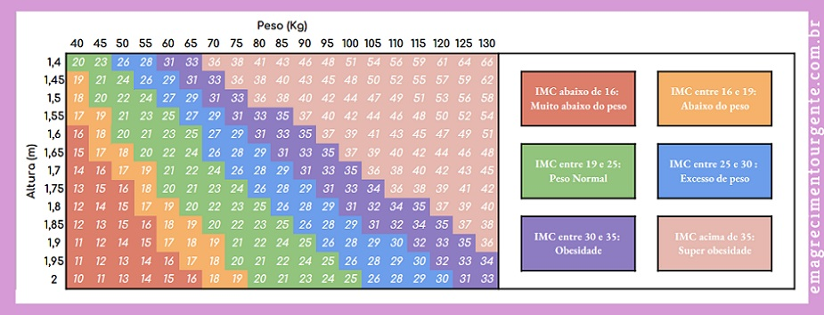

Índice de Massa Corporal (IMC)
Como funciona
O Índice de Massa Corporal é uma medida que relaciona o peso e a altura de uma pessoa, utilizado como uma ferramenta simples para identificar possíveis problemas de peso em adultos, como sobrepeso ou obesidade.O IMC fornece uma estimativa da gordura corporal de uma pessoa e ajuda a avaliar se o peso está entro de faixas consideradas saudáveis.
Calculadora de IMC
Tabela de IMC
